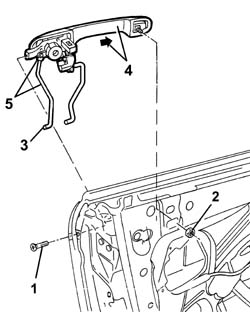

7005C10 FRONT DOOR OUTER HANDLE - R R WITH DOOR PANEL REMOVED
- Path
- Procedures > 70 FITTINGS > 7005 PASSENGER COMPARTMENT FRONT SIDE DOORS > 7005C FRONT LOCK CONTROLS > 7005C10 FRONT DOOR OUTER HANDLE - R R WITH DOOR PANEL REMOVED
- Kind
- repair procedure (removal / refitting; the operation number is the code)
- Applies to
- all engines; all production periods
- Interactive page
- https://sloeber94.github.io/elrnDB-aGt/en/#/125001767
Applies to: all engines; all production periods
 Removing
Removing
 Refitting
RefittingOp. 5570T90 FRONT SPEAKER - R R
Op. 7005M40 FRONT ELECTRIC WINDOW SYSTEM ECU - R+R FOLLOWING ELECTRICAL WIRING CHECK
Op. 7005A04 FRONT SIDE DOOR WATER GUARD PROTECTION - R R OR REPLACE WITH DOOR PANEL REMOVED
Op. 7005E91 PARTITION ON ONE FRONT DOOR (LH OR RH) - R R WITH DOOR PANEL REMOVED
Op. 7005D26 FRONT SIDE DESCENDING WINDOW GLASS SCRAPER (OUTER) R R
Op. 7005D14 FRONT SIDE DOOR DESCENDING WINDOW GLASS - R R WITH DOOR PANEL (AND MOUNT FRAME) REMOVED
Undo the two nuts fixing the rear electric window guide to facilitate the subsequent removal of the door opening rods.
1. Undo the bolt.
2. Undo the nut.
3. Disconnect the rods connected to the handle from the lock side.
4. Move the handle and rod forwards and extract them.
5. If necessary, disconnect and remove the rod connected to the handle.

Applies to: all engines; all production periods
Refitting
RemovingCheck that the handle is undamaged.
If removed, connect the rod connected to the handle.
Fit the handle and rods.
Connect the rod connected to the handle on the lock side.
Connect the rod connected to the lock on the handle side.
Tighten the nut.
Tighten the bolt.
Tighten the two nuts fixing the rear electric window guide.
 | Fastening | Component | Ø | Value (daNm) |
|---|---|---|---|---|
- | Nut | FRONT ELECTRICALLY OPERATED WINDOW MECH | M8 | 16 |
Check that the outer handle and lock are working properly.
Op. 7005D14 FRONT SIDE DOOR DESCENDING WINDOW GLASS - R R WITH DOOR PANEL (AND MOUNT FRAME) REMOVED
Op. 7005D26 FRONT SIDE DESCENDING WINDOW GLASS SCRAPER (OUTER) R R
Op. 7005E91 PARTITION ON ONE FRONT DOOR (LH OR RH) - R R WITH DOOR PANEL REMOVED
Op. 7005A04 FRONT SIDE DOOR WATER GUARD PROTECTION - R R OR REPLACE WITH DOOR PANEL REMOVED
Op. 7005M40 FRONT ELECTRIC WINDOW SYSTEM ECU - R+R FOLLOWING ELECTRICAL WIRING CHECK
Topics linked from this page (6)
- 5570T90 FRONT SPEAKER - R R
- 7005A04 FRONT SIDE DOOR WATER GUARD PROTECTION - R R OR REPLACE WITH DOOR PANEL REMOVED
- 7005D14 FRONT SIDE DOOR DESCENDING WINDOW GLASS - R R WITH DOOR PANEL (AND MOUNT FRAME) REMOVED
- 7005D26 FRONT SIDE DESCENDING WINDOW GLASS SCRAPER (OUTER) R R
- 7005E91 PARTITION ON ONE FRONT DOOR (LH OR RH) - R R WITH DOOR PANEL REMOVED
- 7005M40 FRONT ELECTRIC WINDOW SYSTEM ECU - R+R FOLLOWING ELECTRICAL WIRING CHECK